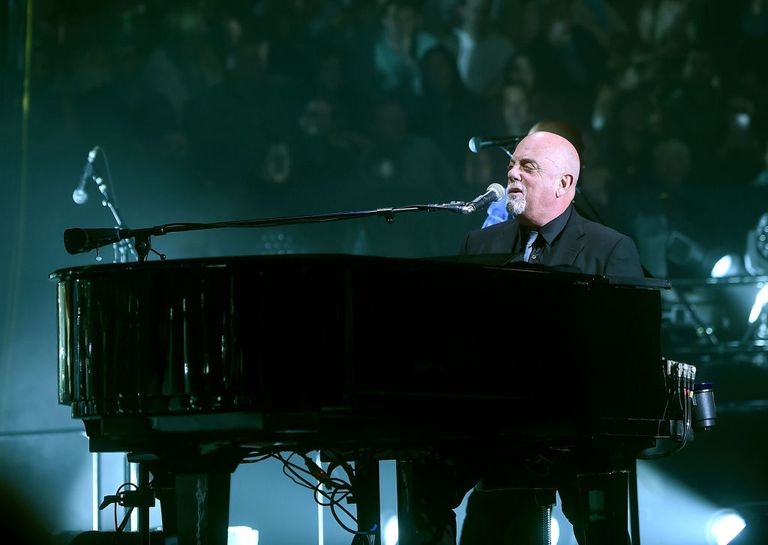

Billy Joel (birthname: William Martin Joel) is an American musician. His early successes gave birth to the nickname "The Piano Man", coming from one of his earliest song hits. Billy has had a successful career as a solo artist, having released 12 studio albums from 1971 to 1993. He is viewed as one of the best-selling music artists of all time, and a well known solo artist in the United States, with over 150 million records sold worldwide.

Below are the titles and respective release year of some of his better known songs that link to a Google results page that show its music video and lyrics.
Billy was born in May 9, 1949 in The Bronx, New York, and grew up in Long Island, New York. Both of these places influenced his music. Growing up, at the insistence of his mother, he took piano lessons.
Billy dropped out of high school to pursue a musical career. He took part in two bands, known as "The Hassles" and "Attila". He later singed a record deal with Family Productions, which kicked off his solo career in 1971. His first solo release was "Cold Spring Harbor".
In 1972, he gave a stellar live radio performance of the song "Captain Jack". It became so popular in Philadelphia, that it caught the attention of Columbia Records. This led Billy to sign a new record deal with Col and release his second album "Piano Man".
He released two more albums, "Streetlife Serenade" and "Turnstiles", with Columbia, before his critical and commercial breakthrough album in 1977, "The Stranger". This album became Columbia's best-seller, with over 10 million copies and spawning several hit singles, including "Movin' Out (Anthony's Song)", "Just the Way You Are", "Vienna", "Only the Good Die Young", and "She's Always a Woman". This album also features the song "Scenes from an Italian Restaurant". It is Billy’s favorite from his own songs and has become a staple of his live shows.
His last two albums, before going on near permanent world tour, are "Storm Front" in 1988 and "River of Dreams" in 1993.
Billy Joel does have his own web site, https://www.billyjoel.com.